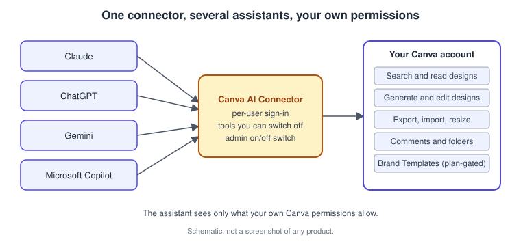
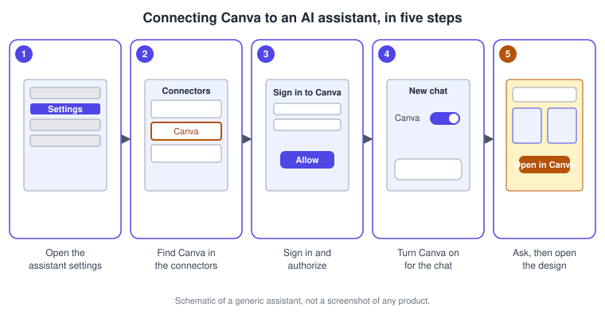

Canva in AI Assistants
|
This content was generated with the assistance of AI and should be verified against the official documentation before being relied on in production. |
This page was checked against the official Canva Help Center, the Canva AI Connector page and the Canva developer documentation on 2026-11-07. It covers the end-user side of Canva’s AI Connector: the way an AI assistant such as Claude, ChatGPT, Gemini or Microsoft Copilot can search, generate, edit and export your Canva designs from inside a chat. The connector is powered by the Canva MCP server and is generally available.
Plans: Canva states that the connector is available for all Canva accounts, including Canva Free and Canva Education, so no paid plan is needed to connect. Some actions depend on your plan, and your assistant may need a paid tier of its own. The per-plan details, in particular for Brand Templates, resizing and autofill, are given in the section on plans below. Prices are not repeated here; they are published at https://www.canva.com/pricing/. AI-powered actions such as generating a design can draw on your Canva AI allowance, whose Standard, Premium and Ultra tiers are explained on Plans, Pricing and AI Allowance.
The running example is Bookshelf, the book catalogue and reading-list app designed in the Figma sub-section. Here you connect Canva to an assistant and ask it for the first draft of the "Book of the week" launch post. This page stays on the end-user connector. The developer side, which is about adding Canva MCP to your own assistant or platform, is covered on the Canva MCP server page, and the protocol itself is introduced in the MCP section of this site.
What the connector is
The Canva AI Connector lets an assistant act on your Canva content through natural language. Canva describes it as a way to generate, edit, manage and search content from any chat, "with the right context". It is not a separate design tool: the designs live in your Canva account, and the assistant produces editable Canva designs that you open in the editor to finish.
It is not the same thing as Canva AI inside the editor, which is covered on the Canva AI assistant page. Canva AI works in Canva with its own chat. The connector works the other way round and brings Canva into assistants you already use. The Help Center also states that the AI Connector is not the same as the Developer MCP Server, which is aimed at developers building with Canva.

The Canva AI Connector page lists ChatGPT, Gemini, Claude, Copilot and Amazon Quick Suite as the assistants it links to, and the Help Center article on connecting AI assistants and tools lists further assistants and tools, with the note that more are added regularly. This page covers the four assistants that have their own Help Center setup guide.
How a request flows
When you connect, you sign in to your own Canva account and authorize the connector. After that the assistant can call Canva tools on your behalf, within your permissions. The same account can be connected to several assistants.
Connect on each assistant
The Help Center keeps one article per assistant. Menu names and labels change between releases of the assistants, so follow the official article if a label differs from the one below.
| Assistant | Where to turn Canva on | Notes from the official guide |
|---|---|---|
Claude |
Settings, then Connectors, find Canva and follow the prompts. In a new chat, open the chat settings and toggle Canva on. |
Claude mobile support depends on your app and device. Canva can be disabled per chat or disconnected from Settings, then Connectors. |
ChatGPT |
Settings, then Plugins, and follow the prompts to connect your Canva account. |
A ChatGPT account is required. In a Business or Enterprise workspace, the workspace admin must enable Apps and Connectors first. |
Gemini |
From a personal Google account, Gemini Settings, then Personal Intelligence, then Connected Apps, then Other, find Canva and turn it on. Link your Google and Canva accounts when prompted. |
You may need a personal Google account experience. Some accounts or organizations restrict connected apps. |
Microsoft Copilot |
Chat flow: install the Canva agent from the Agent store, then use it from the agent store or by choosing to chat with an agent. Cowork flow: install and enable the Canva agent from the plugins customization on a task thread. |
If your admin installed the agent for the workspace you may not be able to remove it yourself. Your organization may restrict the agent store. |
Source: Canva Help Center: Connect your Canva account to Claude, Canva Help Center: Connect your Canva account to ChatGPT, Canva Help Center: Connect your Canva account to Gemini and Canva Help Center: Connect your Canva account to Microsoft Copilot
Procedure: connect Canva to Claude and draft the Bookshelf post

-
Sign in to the Canva account that owns the Bookshelf designs. The official guide asks you to make sure you are signed in to the correct account.
-
Open Claude and go to Settings, then Connectors.
-
Find Canva in the list, select it and follow the prompts to connect your Canva account.
-
Sign in to Canva and authorize the connection when prompted.
-
Start a new chat, open the chat’s settings and, in the Connectors section, toggle Canva on.
-
Confirm the connection: Canva shows as connected in Settings, then Connectors, and as toggled on in the chat’s settings.
-
Ask for the draft, for example: "Create an Instagram post for the Bookshelf launch. The title is Book of the week, with a warm indigo and amber palette and a clear call to action."
-
Preview the result in the chat, then choose the option to open it in Canva and continue editing in the editor.
The same logic applies to the other assistants: find Canva in the assistant’s connectors, plugins, connected apps or agent store, authorize it with your Canva account, enable it for the conversation, and then ask. If your Canva team is managed by an admin, the admin may first need to allow the AI Connector (see below).
Disconnect
You can disconnect from either side. In Canva, go to your profile, then the integrations connected to Canva, and select Disconnect next to the Canva AI Connector. Or remove the integration in the assistant’s own settings. The assistant loses access immediately, while your designs stay in Canva.
Source: Canva: AI Connector
What you can ask
The Help Center article on actions lists the tools available once the connector is on. Availability varies between assistants, and you can ask Canva in your assistant what it can and cannot do. For anything the assistant cannot do, open the design in Canva.
| Task | What it does |
|---|---|
Generate or create a design |
Creates new visuals with AI, or a new editable design for a specific format, from a prompt or brief |
Search designs |
Finds designs by ID, title or content, and returns key details and shareable links for a design ID |
Get a design and view its pages |
Reads the full text and images of a design and shows thumbnails of multi-page designs |
Get presenter notes |
Reads the notes of a presentation, for example to prepare what to say |
Import from a URL |
Turns PDFs, PowerPoint files and other files at a URL into Canva designs |
Export |
Exports a design as formats such as PDF, PNG or MP4 |
Resize, copy and merge |
Resizes to preset or custom dimensions, copies a design leaving the original unchanged, and merges several designs into one |
Folders |
Creates folders, moves items and lists folder contents |
Comments |
Views comments on a design, with filters for unresolved or specific feedback |
Brand Templates |
Searches the templates shared with you, shows a template’s data fields and, where your Canva plan permits it, autofills it with your data |
For Bookshelf, typical prompts are "Find the Book of the week post in my Marketing folder", "Export the launch presentation as a PDF", "Show the unresolved comments on the launch deck" and "Resize the Instagram post to a YouTube thumbnail".
Canva’s connector page adds that AI images can be turned into editable layers in selected assistants, naming Gemini and ChatGPT as examples. That is a feature of the assistant integration, not of every assistant, so check your assistant before relying on it.
Write better prompts
The Help Center’s advice is short. Be specific, with dimensions, colours, text and design names. Refer to existing brand assets to keep designs consistent. Iterate gradually, starting simple and refining through follow-up prompts. Stay organized with folders and clear names, because they help the assistant find designs faster.
Plans and limits
The pages that Canva publishes describe plan requirements in slightly different ways, so treat the table as a summary and check your own account.
| Capability | What the official pages say | Where |
|---|---|---|
Connecting and core use |
Available to every Canva account, including Free and Education; availability of some individual connectors can vary by account |
AI Connector page, Help Center |
Resizing |
Paid plans only on the AI Connector page; Canva Pro and above on the developer access page |
AI Connector page, developer access page |
Brand Templates search |
Paid plans, including Education; you only see templates shared with you |
Help Center |
Brand Template autofill |
Canva Pro and above |
Developer access page |
AI generation |
May use your monthly Canva AI allowance; assistants have their own message or token limits too |
Help Center |
Source: Canva: AI Connector, Canva Help Center: Connect Canva to an AI assistant and Canva Developers: Canva MCP access and permissions
Canva for Education connections may be limited. The AI Connector page says that only teachers and students in higher education can access the capabilities unlocked by the connector.
Permissions, admin controls and privacy
-
The assistant generally accesses Canva projects you have permission to view, including presentations, docs and other text-based content. Shared folders work when they are shared with you.
-
Canva states that your content remains private and secure, that assistants only access what you have chosen to share or view within your existing permissions, and that Canva’s security and your organization’s policies apply. See the Canva privacy policy.
-
The connector counts as a third-party integration. On Teams, Business, Nonprofit, Education and Enterprise accounts an admin decides whether people can connect assistants, under the Admin Dashboard, then Controls and Permissions, then Third-party integrations. When it is off, nobody on the team can connect, and existing connections stop working.
-
The connector uses the same permissions as the Canva Connect API. Canva advises reviewing your data rules before turning it on and limiting access to approved people if needed.
-
Generating designs uses Magic Design. If an admin has turned Magic Design off under Settings, then Permissions, then Magic and AI, the assistant cannot generate designs for anyone on the team.
-
In Claude you can disable individual Canva tools, disable all of them, or allow tools without repeated prompts, under the profile settings for integrations. Permanent permissions persist across sessions until you change them.
Source: Canva Help Center: Connect Canva to an AI assistant and Canva Help Center: Actions you can take in AI assistants connected to Canva MCP
For team-level controls in general, see Administration, Enterprise and Security.
Pitfalls and troubleshooting
-
Canva is missing or will not connect. The usual causes are an admin who disabled third-party integrations or the connector, the wrong Canva account, or Canva not enabled in the assistant’s connected apps. Disconnect, reconnect and complete the sign-in prompts again.
-
Connected but not available in a chat (Claude). Start a new chat and toggle Canva on in the chat’s connector settings.
-
Access Restricted by Team Admin (ChatGPT, Copilot). Ask your Canva admin to allow the AI Connector.
-
An upgrade message when using Brand Templates. You may be on Canva Free, and you only see templates shared with you. Check the account, then ask an admin or Brand Designer to share the templates.
-
A link from ChatGPT does not open a design. ChatGPT sometimes produces links that look like Canva links but point to no real design. Open the design from the preview or find it in your Canva projects.
-
Designs made in an assistant are missing from Canva. Only designs you select in the chat are saved to your account, so choose Save or Open in Canva.
-
Fewer design tools than expected in Claude. The Help Center says Canva’s nine design tools are grouped into a read tool and an edit tool, with the same capabilities plus new ones. If they do not respond, disconnect and re-authorize.
-
Hitting limits. AI actions may pause until your allowance refreshes, and your assistant has separate usage limits.
Where older guides are outdated
Older books and tutorials describe using a chat assistant only to write copy that you paste into Canva. That is no longer the only way.
| Older statement | Current behaviour | Date |
|---|---|---|
An outside chat assistant can only write the text for a design |
Assistants can connect to Canva through the AI Connector to search, generate, edit and export designs |
Canva MCP self-serve for developers, 2026-10-27 |
Canva’s AI lives only in Canva’s own tools |
Canva AI 2.0 works in the editor, and the connector brings Canva into other assistants |
Canva AI 2.0 research preview, 2026-04-16 |
Recent changes
-
2026-04-16: Canva AI 2.0 launched as a research preview, with Connectors among its features.
-
2026-10-27: Canva announced that developers can add Canva MCP to their own assistants or platforms self-serve; each user signs in with their own Canva account.
-
The Help Center now documents guides for ChatGPT, Claude, Gemini and Microsoft Copilot, and ChatGPT’s entry point is labeled Plugins as of this check.